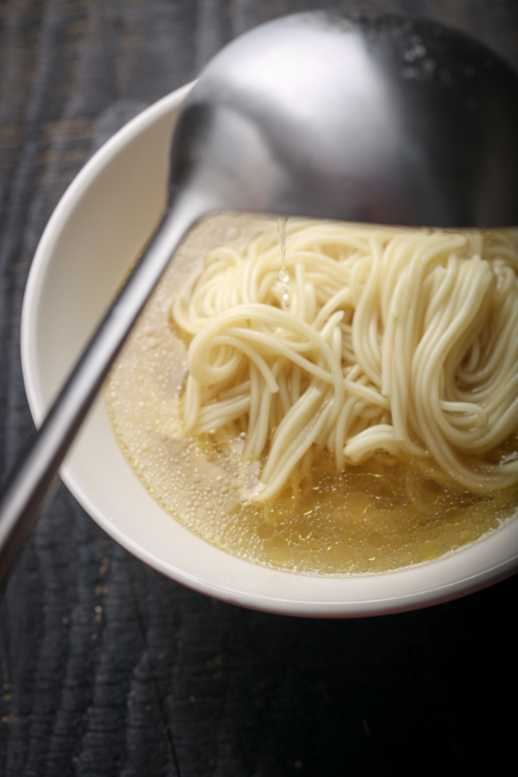
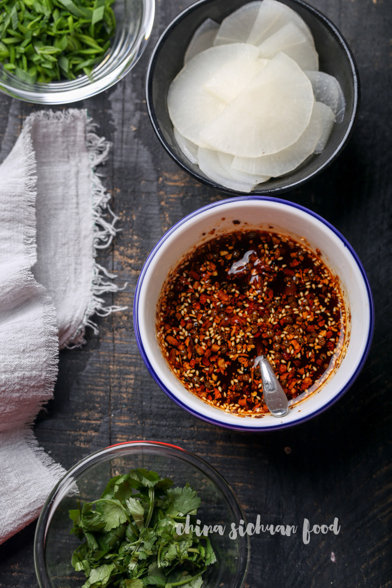
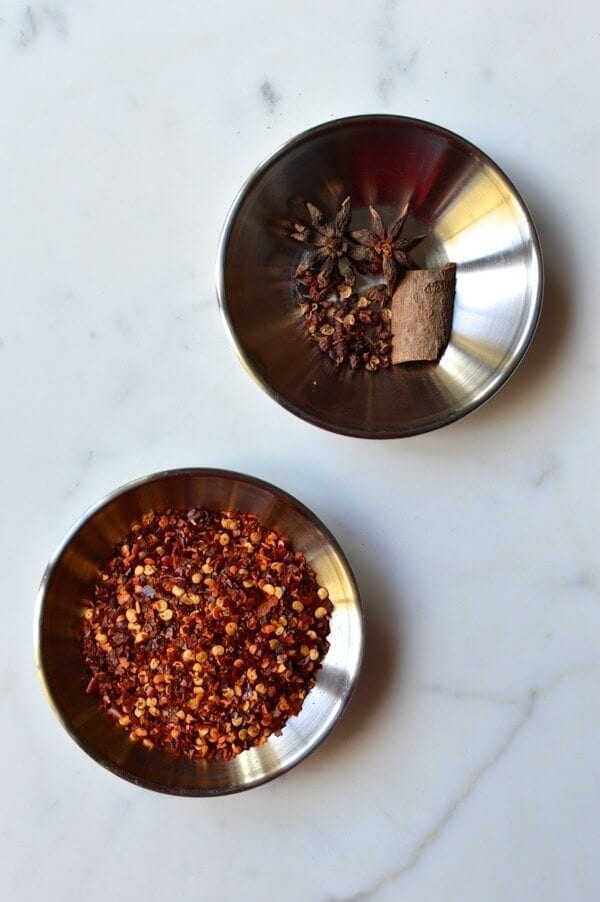

LanZhou Beef Noodle Soup
Course: Soup, Staple
Cuisine: Chinese
Serving Size: 4
Calories: 1248 kcal
Prep time: 2 hours
Cook time: 1 hours
Total time: 3 hours
Ingredients
Toppings & noodels
- 1 beef oxtail , around 1000g, cut into 2cm thick pieces
- 250 g back bones
- 250 g chicken bones
- 500 g beef shank
- 2 green onions
- 1 thumb ginger , sliced
- 2 scallion whites
- 3 L water
- salt to taste
- Noodles for serving
Spices
- 2 star anise
- 1 small piece of Chinese cinnamon
- 2 bay leaves
- 4 cloves
- ¼ tsp. whole cumin seeds
- ¼ tsp. Sichuan peppercorn
- ⅛ tsp. fennel seeds
- 1 cardamom
- 3 Amomum Cardamomum pods
- 1 Amomum tsaoko
- 1 dried chili pepper
Garnish & drizzle
- 1 cup chopped coriander
- 1 cup chopped garlic leek
- half of a daikon radish
- chili oil , as needed
Instructions
Make the stock
- Remove the blood waters
- Add all the bones and meat in a large pot, pour in enough water to cover, add green onion and 4 slices of ginger and then bring to a boiling. Transfer out and clean.
- Soak all the spices with around ½ cup boiling hot water for 10 minutes and then wrap all of them with a glaze bag and seal with cotton lines.
- Add all the bones and beef shank, scallion whites and spiced wrapped in the glaze bag.
- Pour around 2.5L to 3 L water (separately for high pressure cooker and cast iron soup pot).
- Bring to boil and simmer for around 1.5 to 2 hours. Add salt to taste.
Cook & assemble noodles
- Take out the beef shank and cut thinly.
- Cook radish slices in broth for 2 minutes, set aside.
- Cook noodles as directed and then scoop enough beef stock to cover.
- Top with daikon slices, beef shank slices, coriander, garlic leek (or green onion) and chili oil. Serve hot!




Recipe Sites
- The Woks of Life
This website includes detailed cooking instructions on how to cook the dish step by step, including some small tricks to cook better. Also, with the help of the ingredients checklist, it is straightforward for the users to follow during the preparation process without missing anything important.
- China Sichuan Food
This website is even better in some content compared to the website above: it attaches the photos of each step, making it more vivid for the users to follow up rather than simply looking at the words. Moreover, this website makes the cooking process into parts. So, the users could prepare the toppings, noodles, and drizzles separately. This allows them to be more organized.
- My Chinese Recipes
This website includes another dish, but one thing that catches my attention is that it shows the cooking process and has a button to adjust serves easily. The ingredients change along with the serving amount, making it much easier for the users to prepare food for different groups of people. It also demonstrates the time cost of each step, making the whole process more controlled.
Non-Recipe Sites
- nurturedigital
This website uses a very effective combination of background color, font style, font size, and layout to create a solid visual effect and visual hierarchy to highlight the content. It is imperative to think of how users access information from the webpage.
- Pinterest
This website visually allocates all the images precisely and directly with the help of the evenly distributed rows and columns and the white spaces. In the recipe, many images will be presented. This website might offer a way of a better arrangement.
- The Talk
This website reaches a balance between images and text content. Since there are many text instructions in the recipe, I can get some idea of typography designs from it.